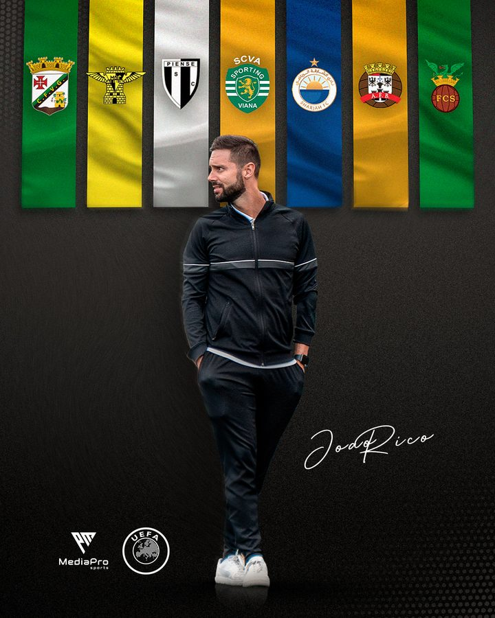
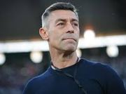

Head coach com impacto comprovado em contextos profissionais e académicos. Metodologia própria, disciplina táctica e forte componente humana.
"It's really a pleasure to recommend such a person and a coach like João Rico. He is that type of professional that is detail oriented — a workaholic that combines knowledge with practice both in training and competition."
"É realmente um prazer recomendar uma pessoa e um treinador como o João Rico. Conheço-o muito bem, assim como o excelente trabalho que desenvolveu nas últimas épocas. É aquele tipo de profissional que é orientado para o pormenor. É definitivamente um \"workaholic\" que combina o conhecimento (da sua vasta formação académica) com a prática, tanto no treino como na competição."

"Vejo no João um treinador com ambição, grande potencial, competências inegáveis e vontade permanente de continuar a aprender."